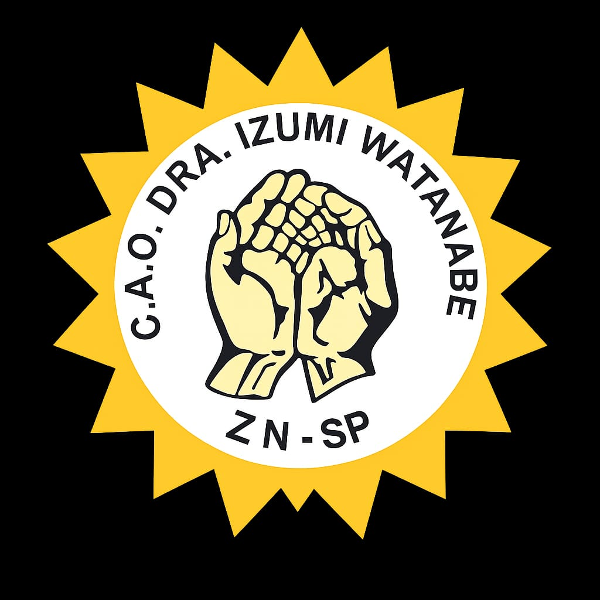
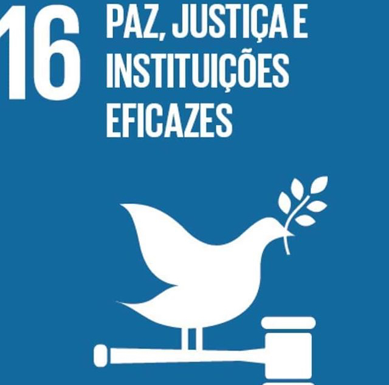
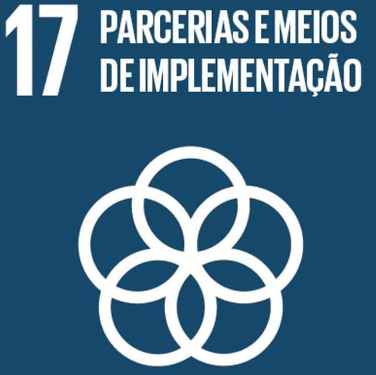

Você sabia que existem ONGs em que tem focos nos vovôs e vovós da região?

Você sabia que existem ONGs em que tem focos nos vovôs e vovós da região?
Conheça a Instituição Dra. Izumi Watanabe e saiba mais!
Sendo uma das famílias mais antigas da região do Cachoeirinha, a família Watanabe possui uma loja de construção de materiais.
A dra. Izumi sempre foi muito dedicada a trabalhos filantrópicos, no qual também induzia a família a ajudar. Formada em odontologia, Izumi trabalhava na UBS pela prefeitura de São Paulo e, em horários vagos, trabalhava em seu consultório. Vindo a falecer com 36 anos, vítima de câncer.
Em meio a está dor, amigos e familiares quiseram prestar homenagem a essa pessoa que, em seu tempo vago, sempre ajudou os mais necessitados. Foi então que surgiu essa instituição.
Em 1999, a ONG Centro de Apoio e Orientação Dra. Izumi Watanabe (@cao.izumiwatanabe) surgiu.
Nos primeiros anos, era focada em atividades para os jovens, como escolinha de futebol, judô, entrega de cestas básicas e até com as necessidades escolares, contudo, os voluntários foram notando que iam algumas avós responsáveis para levar as crianças e adolescentes, então foram preparando atividades para elas.
Com o passar do tempo, o público idoso cresceu majoritariamente. Foi então que surgiu a ideia de criar um grupo de recreação. O chamado Lian-Gong, uma atividade chinesa, que não necessita de atividade física e foi desenvolvida com a UBS da vila Dionisia.
Então, em 2012, a instituição teve a percepção de dar a atenção para essa faixa-etária, trazendo outras atividades e pesquisando mais sobre o envelhecimento, procurando um espaço necessário para que fossem eles mesmos.
Trouxeram palestras, tais como o Estatuto da Pessoa Idosa, da Longevidade e da importância das atividades para a terceira idade. Criando também outras oficinas.
Contando com algumas atividades gratuitas, apoio emocional com psicóloga e assistente social para garantir a escuta ativa e rodas de conversas que também é aberto para a comunidade. Nas rodas podem discutir demandas, acessibilidade, melhorias na saúde e no bairro.
Atendendo mais de 140 idosos, o centro se mantém com parcerias, como Programa Tampinha Legal em que é promovido por toda a linha azul e através do Bazar que é composto de doações de roupas, sapatos e acessórios. Outros parceiros são: Instituto Pinheiros, Instituto Velho Amigo, Atados, Aurora Social e outras lojas.
Outra forma de se auto-ajudarem e ajudarem a comunidade foi através de coletas de lacres. Eles utilizam a arrecadação para trocarem por cadeiras de rodas, muletas para emprestarem para a comunidade e idosos.
Como nem tudo é um mar de rosas, a ONG também passa por dificuldades, principalmente financeiras, já que não possuem ajuda do governo e que a maior parte do custos é a própria ONG que lida, além dos gastos fixos. Outro, é o voluntariado em que poucas pessoas aparecem por conta das rotinas.
Outra dificuldade é em conseguir parceiros, já que muitos têm o preconceito com a terceira idade, em que eles tem que “ficar em casa”, causando o famoso etarismo. Contudo, grandes conquistas vem!Como doação de um carro, que foi feita através de uma mobilização, para buscar as tampinhas nas estações do metrô; completar 27 anos de existência do Centro sem convênio ou recursos da prefeitura/Estado e a própria família Watanabe que disponibiliza o lugar.
Agora, para quem tem interesse em trabalhar com o voluntariado, as vagas estão disponíveis no site do Atados e Solidarizando, mas podem ir até o local para falar. Os três requisitos necessários são: acreditar na causa, ter disponibilidade e vontade.
Quando perguntados sobre a ampliação de cursos e oficinas, a Senhora Marisol (coordenadora), falou que tem interesse sim, mas que, novamente, falta voluntários e verba. Mas que seus interesses estão voltados para trazer o público masculino, fazer eles saírem e socializarem mais.
Para os jovens, a ONG não faz atividades, mas colabora com judô com o Sensei na parte de cima do imóvel, a escolinha de futebol com professores voluntários, oferecendo valores sociais. Ademais, o centro realiza ações pontuais, como a intergeracional - uma atividade entre crianças da escolinha e idosos. Além de caminhadas realizadas em junho e alguns desfiles de primavera, mas sempre focando nas pessoas 60+.
Atividades propostas:
- Lian-Gong
- Ginástica funcional
- Pilates
- Arteterapia
- Alongamentos
- Yoga
- Crochê
- Pintura em tecido
- Ritmos
- Aula de pintura
Principais ODS:



